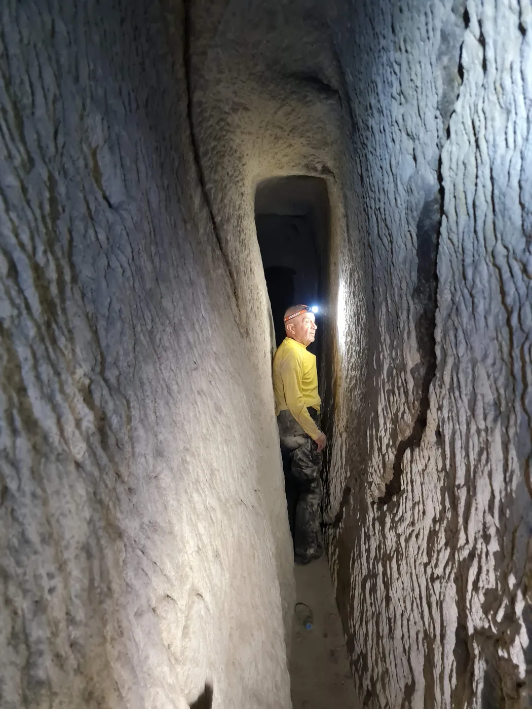

Temenni bölgesinin derinliklerinde, yüzyıllardır yerel halkın bildiği ancak yakın zamanda bilimsel olarak haritalanan devasa bir yeraltı geçidinin girişi bulunmaktadır. Tünel Kayakapı kaya kütlesinin altından geçmektedir. Toplam 550 metrelik ölçülen uzunluğuyla Ürgüp’te şu ana kadar tespit edilen en uzun antik tünel olma özelliğini taşır. Tünel sadece bir geçiş yolu değil, tarihin katmanlarını barındıran bir zaman tünelidir. Mimari yapısı ve işçiliği tünelin Roma döneminde inşa edildiğini gösterirken, zeminindeki pişmiş toprak künkler (su boruları), Osmanlı döneminde (Damat İbrahim Paşa zamanı) tünelin şehre su taşımak için modernize edildiğini belgeler. Tünelin en heyecan verici özelliği ise çıkış noktalarıdır. Kuzeye açılan sekiz farklı koldan biri, ünlü Aziz Yuhanna’nın (St. John the Russian) çilehanesine, bir diğeri ise kilisesine ulaşmaktadır. Tünel içindeki dikey geçişler ve galeriler, buranın sıradan bir yapı değil, karmaşık bir mühendislik harikası olduğunu kanıtlamaktadır.
Deep within the Temenni district lies the entrance to an enormous underground passage, known to locals for centuries but only recently mapped scientifically. The tunnel runs beneath the Kayakapı rock mass. At a measured length of 550 metres, it is the longest ancient tunnel so far identified in Ürgüp. It is not merely a passageway but a tunnel through time, holding layers of history. While its architecture and workmanship show it was built in the Roman period, the terracotta water pipes in its floor document that it was modernised in the Ottoman period (the era of Damat İbrahim Paşa) to carry water to the town. Its most remarkable feature is its exit points: of the eight separate branches opening to the north, one reaches the hermitage of the famous Saint John (St. John the Russian) and another his church. The vertical passages and galleries inside prove this is no ordinary structure but a complex feat of engineering.